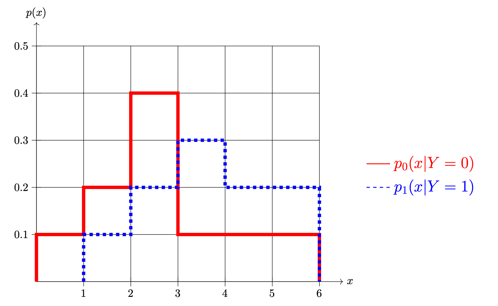
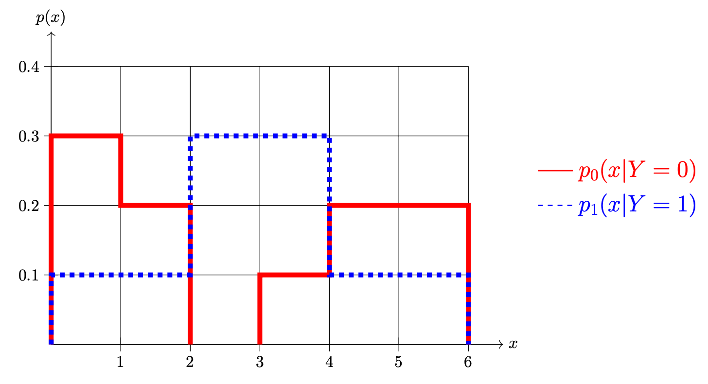

Problems tagged with "bayes classifier"
Problem #032
Tags: bayes error, bayes classifier
Shown below are two conditional densities, \(p_1(x \,|\, Y = 1)\) and \(p_0(x \given Y = 0)\), describing the distribution of a continuous random variable \(X\) for two classes: \(Y = 0\)(the solid line) and \(Y = 1\)(the dashed line). You may assume that both densities are piecewise constant.

Part 1)
Suppose \(\pr(Y = 1) = 0.5\) and \(\pr(Y = 0) = 0.5\). What is the prediction of the Bayes classifier at \(x = 1.5\)?
Solution
Class 0
Part 2)
Suppose \(\pr(Y = 1) = 0.5\) and \(\pr(Y = 0) = 0.5\). What is the Bayes error with respect to this distribution?
Part 3)
Now suppose \(\pr(Y = 1) = 0.7\) and \(\pr(Y = 0) = 0.3\). What is the prediction of the Bayes classifier at \(x = 1.5\)?
Solution
Class 1
Part 4)
Now suppose \(\pr(Y = 1) = 0.7\) and \(\pr(Y = 0) = 0.3\). What is the Bayes error with respect to this distribution?
Problem #033
Tags: bayes classifier
Suppose the Bayes classifier achieves an error rate of 15\% on a particular data distribution. True or False: It is impossible for any classifier trained on data drawn from this distribution to achieve better than 85\% accuracy on a finite test set that is drawn from this distribution.
Solution
False.
Problem #047
Tags: bayes error, bayes classifier
Part 1)
Suppose a particular probability distribution has the property that, whenever data are sampled from the distribution, the sampled data are guaranteed to be linearly separable. True or False: the Bayes error with respect to this distribution is 0\%.
Solution
True.
Part 2)
Now consider a different probability distribution. Suppose the Bayes classifier achieves an error rate of 0\% on this distribution. True or False: given a finite data set sampled from this distribution, the data must be linearly separable.
Solution
False.
Problem #093
Tags: bayes error, bayes classifier
Shown below are two conditional densities, \(p_1(x \,|\, Y = 1)\) and \(p_0(x \given Y = 0)\), describing the distribution of a continuous random variable \(X\) for two classes: \(Y = 0\)(the solid line) and \(Y = 1\)(the dashed line). You may assume that both densities are piecewise constant.

Part 1)
What is \(\pr(1 \leq X \leq 3 \given Y = 0)\)?
Part 2)
Suppose \(\pr(Y = 1) = \pr(Y = 0) = 0.5\). What is the prediction of the Bayes classifier at \(x = 2.5\)?
Solution
Class 0.
Part 3)
Suppose again that \(\pr(Y = 1) = \pr(Y = 0) = 0.5\). What is the Bayes error with respect to this distribution?
Part 4)
Now suppose \(\pr(Y = 1) = 0.7\) and \(\pr(Y = 0) = 0.3\). What is the prediction of the Bayes classifier at \(x = 2.5\)?
Solution
Class 1.
Part 5)
Suppose again that \(\pr(Y = 1) = 0.7\) and \(\pr(Y = 0) = 0.3\). What is the Bayes error with respect to this distribution?
Solution
Video explanation: https://youtu.be/mczKmVUJauI
Problem #110
Tags: bayes error, bayes classifier
Shown below are two conditional densities, \(p_1(x \,|\, Y = 1)\) and \(p_0(x \given Y = 0)\), describing the distribution of a continuous random variable \(X\) for two classes: \(Y = 0\)(the solid line) and \(Y = 1\)(the dashed line). You may assume that both densities are piecewise constant.

Part 1)
Suppose that \(\pr(Y = 1) = \pr(Y = 0) = 0.5\). What is \(\pr(1 \leq X \leq 3)\)?
Part 2)
Suppose \(\pr(Y = 1) = \pr(Y = 0) = 0.5\). What is the prediction of the Bayes classifier at \(x = 1.5\)?
Solution
Class 0.
Part 3)
Suppose again that \(\pr(Y = 1) = \pr(Y = 0) = 0.5\). What is the Bayes error with respect to this distribution?
Part 4)
Now suppose \(\pr(Y = 1) = 0.7\) and \(\pr(Y = 0) = 0.3\). What is \(\pr(1 \leq X \leq 3)\)?
Part 5)
Suppose again that \(\pr(Y = 1) = 0.7\) and \(\pr(Y = 0) = 0.3\). What is the prediction of the Bayes classifier at \(x = 1.5\)?
Solution
Class 1.
Part 6)
Suppose again that \(\pr(Y = 1) = 0.7\) and \(\pr(Y = 0) = 0.3\). What is the Bayes error with respect to this distribution?
Problem #111
Tags: bayes classifier, histogram estimators
In this problem, consider the following labeled data set of 19 points, 7 from Class 1 and 12 from Class 0.

Suppose the class conditional densities are estimated using a histogram estimator with bins: \([0, .25), [.25, .5), [.5, 75),\) and \([.75, 1.0)\).
In all of the parts below, you may write your answer either as a decimal or as a fraction.
Part 1)
What is the estimate of the Class 0 density at \(x = 0.6\)? That is, what is the estimate \(\hat p(0.6 \given Y = 0)\)?
Part 2)
Using the same histogram estimator, what is the estimate \(\hat\pr(Y = 1 \given x = 0.35)\)?
Part 3)
What is the estimate of the marginal density of \(x\) at \(x = 0.1\)? That is, what is \(\hat p(0.1)\)?
Part 4)
Let \(\hat p(x \given Y = 0)\) be the histogram density estimate for the Class 0 conditional density. What is